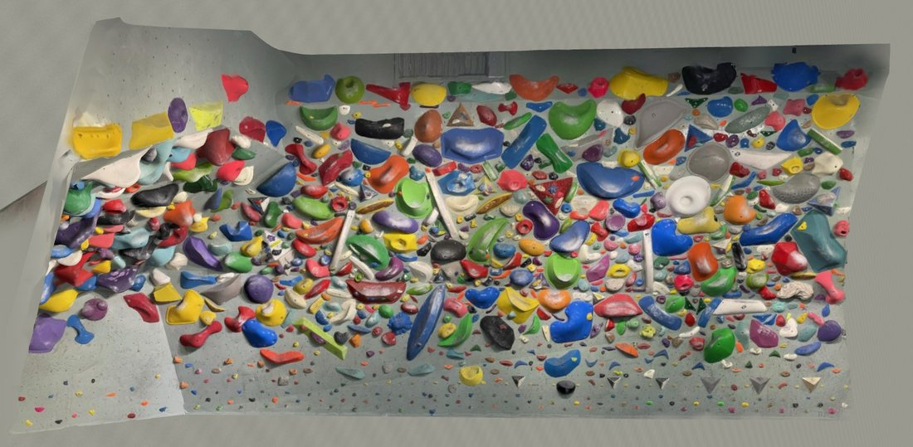
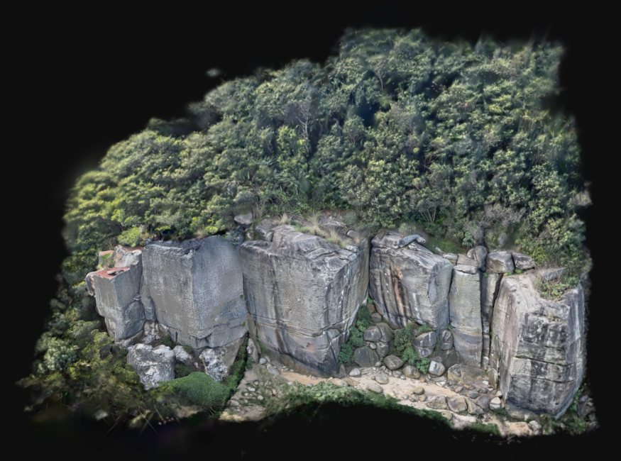

岩館
- 輸入牆面照片
- AI偵測岩點、外框
- 你判斷漏掉的岩點、外框


Studio 是給 AI 代理做事、你來確認的：整理照片、轉換路線書、偵測岩點、整合進你的 App 都交給它，你只看結果、按發佈。
用 Climbio Studio 把 〔照片資料夾〕 的岩館牆面照片做成岩點檔。先讀專案的 AGENTS.md，再跑 node tools/studio.mjs start gym 〔照片資料夾〕 照它印的做；AI 能判斷的都自己做完，做好告訴我專案資料夾在哪，只有發佈要問我，做不到的如實說卡在哪。
用 Climbio Studio 把 〔老岩場的路線書：檔案或網頁〕 轉成手機上好閱讀的紅點貓格式（Guidebook）。先讀專案的 AGENTS.md，再跑 node tools/studio.mjs start crag 〔資料夾〕 〔路線書檔案或網址〕 照它印的做；AI 能判斷的都自己做完，做好告訴我專案資料夾在哪，只有發佈要問我，做不到的如實說卡在哪。
用 Climbio Studio 把這份路線書 〔Word、PDF 或網址〕 轉成 Guidebook。先讀專案的 AGENTS.md，再跑 node tools/studio.mjs start book 〔資料夾〕 〔路線書〕 照它印的做；AI 能判斷的都自己做完，做好告訴我專案資料夾在哪，只有發佈要問我，做不到的如實說卡在哪。
用 Climbio 的 3D 重建流程把 〔影片或照片資料夾〕 做成 3D 牆。先讀專案的 AGENTS.md，再跑 node tools/studio.mjs start 3d 〔3D 牆資料夾〕 照它印的做；AI 能判斷的都自己做完，只有發佈要問我，做不到的如實說卡在哪。
用 Climbio 的內嵌頁把已發佈的牆面（〔牆 id〕）整合進我們的岩館 App：看線、定線都放進現有的路線頁。先讀專案的 AGENTS.md，再讀 docs/gym-agent.md 和 docs/embed.md 照做，用 init 的 wallId；定好的路線用 submit 提交，記下回傳的 routeId 對應我們的使用者。需要我決定或提供的才問我，做完告訴我怎麼驗收，做不到的如實說卡在哪。